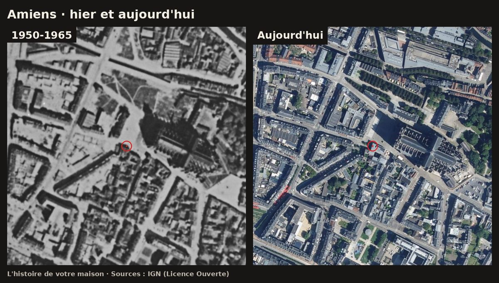
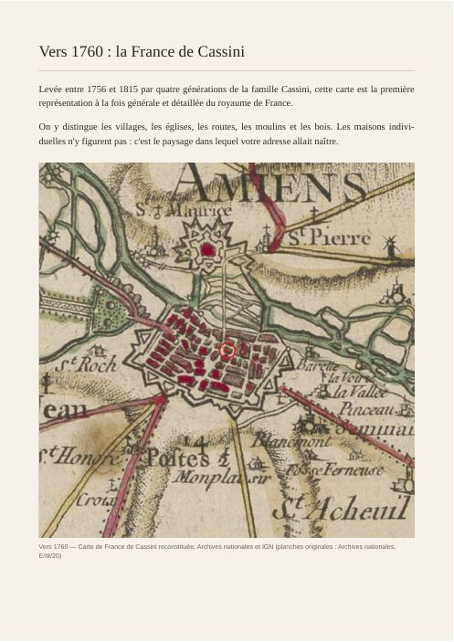

Un cadeau qui raconte une maison
Votre maison,
il y a 250 ans.
Entrez une adresse : recevez en quelques minutes un livret PDF qui montre ce lieu sur la carte de Cassini (vers 1760), la carte d'état-major (vers 1850), la première photo aérienne (1950) et aujourd'hui, avec l'histoire de la commune.
Créer mon livret29 € · PDF reçu par email
Comment ça marche

Dans le livret
- Votre adresse sur la carte de Cassini (XVIIIe siècle)
- La carte d'état-major (1820-1866)
- Les photographies aériennes de 1950 à aujourd'hui, à la même échelle
- L'âge et les matériaux estimés du bâtiment, sa parcelle cadastrale
- L'origine du nom et l'histoire de la commune
- Les lieux remarquables autour de chez vous
- L'image « hier / aujourd'hui » prête à partager
Questions fréquentes
Ma maison sera-t-elle visible sur la carte de 1760 ?
La carte de Cassini montre les villages, routes, églises et moulins, pas les maisons une à une. Votre maison apparaît en général sur la carte d'état-major si elle date d'avant 1866, et sur la photographie de 1950 si elle date d'avant.
D'où viennent les informations ?
Uniquement de données publiques ouvertes : IGN (Licence Ouverte), cadastre (DGFiP), Base de données nationale des bâtiments (CSTB) et Wikipédia (CC BY-SA). L'année de construction est une estimation issue des fichiers fonciers.
Toute la France est-elle couverte ?
La France métropolitaine, oui, mais pas l'outre-mer (les cartes anciennes ne le couvrent pas). La carte de Cassini ne montre ni la Savoie, ni la Haute-Savoie, ni le comté de Nice, ni la Corse, qui n'étaient pas français à l'époque : pour ces adresses, le livret commence avec la carte d'état-major. Certaines campagnes de photographies anciennes ne couvrent pas tout le territoire : le livret ne montre que les époques disponibles pour votre adresse.
Et si mon adresse n'a pas de numéro (lieu-dit) ?
Aucun problème : le livret est centré sur le lieu-dit ou la rue. Indiquez toujours le code postal et la commune. Si l'adresse est ambiguë, nous la vérifions à la main avant l'envoi et vous prévenons par email.
Et si je ne suis pas satisfait ?
Répondez simplement à l'email de livraison : nous refaisons le livret ou vous remboursons. En validant la commande, vous demandez la fourniture immédiate du contenu numérique et reconnaissez perdre ainsi votre droit de rétractation (article L221-28 13° du Code de la consommation). Voir les conditions générales de vente.
Je suis agence immobilière ou notaire
Offrez le livret à vos acquéreurs ou utilisez-le pour valoriser vos annonces de maisons anciennes. Contactez-nous pour un tarif en volume.